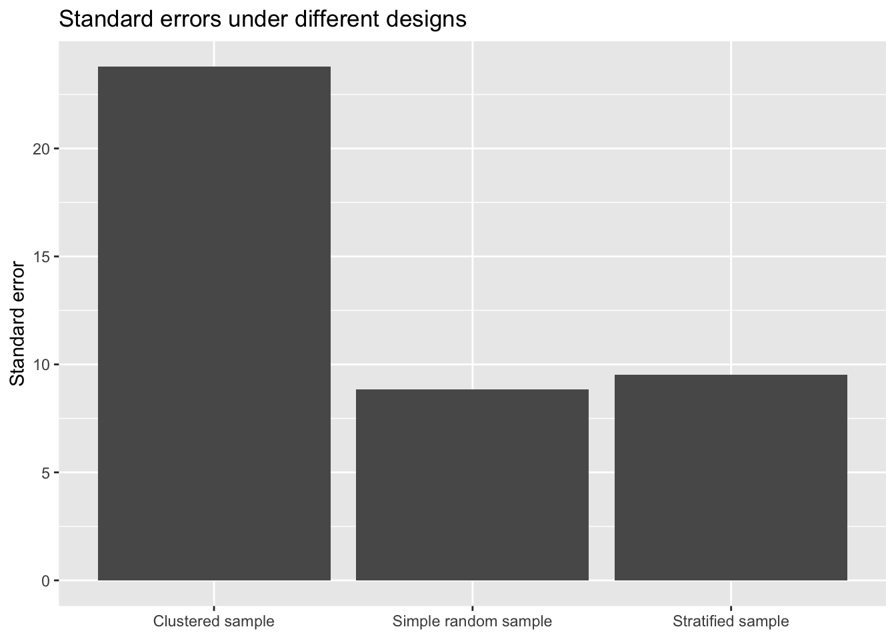

# install.packages(c("survey", "dplyr", "ggplot2"))9 Survey Data Analysis: weights II
9.1 Warm-up: connect this lesson to the previous one
In the first lesson, we focused on bias and representation.
Today we focus on uncertainty.
Even if two analyses give similar averages, they may not have the same standard errors. That is because survey data often come from designs that are more complicated than simple random sampling.
A useful teaching line:
In survey analysis, it is not enough to ask “What is the estimate?” We also need to ask “How was the sample collected?”
9.2 Part 1. Stratification
9.2.1 Plain-language definition
A survey uses stratification when the population is divided into groups first, and then sampling happens separately inside each group.
Examples of strata:
- region
- grade level
- school type
- age group
- race/ethnicity category
9.2.2 Intuition
Imagine you want data from schools across a state. You are worried that small rural schools might be missed if you take one statewide simple random sample. So you divide schools into groups such as:
- urban
- suburban
- rural
and then sample from each group.
That is stratification.
9.2.3 Why researchers use it
Stratification is often used to:
- guarantee representation from important subgroups
- improve precision when units within strata are fairly similar
- support subgroup estimates
9.2.4 Everyday analogy
Suppose you want opinions from students in first year, second year, third year, and fourth year. If you sample everyone from one big list, you might accidentally get too few from one class year. If you sample within each year separately, you ensure coverage.
9.2.5 Key teaching idea
Stratification often reduces standard errors when the strata are meaningfully different from each other and relatively similar within themselves.
That is because the design organizes the sample efficiently.
9.3 Part 2. Clustering
9.3.1 Plain-language definition
A survey uses clustering when it samples groups of units first, and then samples people or records within those groups.
Examples of clusters:
- schools
- households
- neighborhoods
- hospitals
- classrooms
9.3.2 Intuition
Instead of sampling individual students from the entire state, imagine you first sample schools, then sample students inside the selected schools.
That is clustering.
9.3.3 Why researchers use it
Clustering is often used because it is:
- cheaper
- faster
- logistically easier
For example, interviewers can visit one school and survey several students there instead of traveling all over the state.
9.3.4 Everyday analogy
Suppose you want to learn about cafeteria satisfaction across a school district. It is much easier to visit a handful of schools and survey many students there than to randomly locate students one by one across the district.
9.3.5 Key teaching idea
Clustering often increases standard errors.
Why? Because people in the same cluster are often more alike than people chosen independently across the whole population.
Students in the same school may resemble each other. People in the same household may resemble each other. Patients in the same hospital may resemble each other.
This means you get less independent information than you would from the same number of people sampled separately.
9.4 Part 3. Why standard errors change under complex designs
9.4.1 The central idea
A standard error measures how much an estimate would vary across repeated samples.
If the sampling design changes, the amount of variation across repeated samples can also change.
That is why the same sample size does not always imply the same standard error.
9.4.2 A useful contrast
9.4.2.1 Under simple random sampling
Each sampled unit is chosen more or less independently from the full population.
9.4.2.2 Under clustering
Units inside the same cluster tend to be similar. So a sample of 200 students from 10 schools does not behave like 200 completely independent observations. It behaves more like a smaller amount of information.
9.4.2.3 Under stratification
If the strata are well chosen, the sample is organized efficiently. That can reduce noise and improve precision.
9.4.3 Accessible phrasing for students
Complex designs change how much unique information the sample contains.
9.4.4 Design effect, without overloading students
A simple introduction:
- design effect compares the variance under a complex design to the variance under simple random sampling
- if the design effect is greater than 1, the design has larger variance than a simple random sample
- if the design effect is less than 1, the design has smaller variance than a simple random sample
You do not need to emphasize formulas in the first pass. The interpretation is enough.
9.5 A simple board demonstration
Use this as a quick in-class demonstration before opening R.
9.5.1 Scenario A: clustered sampling
You sample 20 students from 1 classroom. Many of them have similar experiences because they share the same teacher and environment.
9.5.2 Scenario B: more spread out sampling
You sample 20 students from 20 different classrooms. Now you see much more of the district.
Ask students:
- Which sample gives more independent information?
- Which one would usually have the smaller standard error for a district-level mean?
Expected answer: Scenario B.
9.6 R setup
We will use the survey package and a real dataset that comes with it: the California Academic Performance Index school data.
This is a good teaching dataset because it includes:
- a population dataset
- a stratified sample
- a clustered sample
- variables that are easy to interpret in an education setting
9.6.1 Install packages if needed
9.6.2 Load packages and data
library(survey)
library(dplyr)
library(ggplot2)
data(api)The key datasets we will use are:
apipop: population of schoolsapistrat: stratified sample of schoolsapiclus1: one-stage cluster sample of schools
9.7 Meet the real dataset
This dataset contains information on California schools. A useful outcome variable is:
api00: Academic Performance Index score
Some other helpful variables:
stype: school typeell: percentage of English language learnersmeals: percentage eligible for subsidized mealspw: survey weightdnum: district identifier, which we will use as a cluster variable
9.7.1 Peek at the data
glimpse(apipop)Rows: 6,194
Columns: 37
$ cds <chr> "01611190130229", "01611190132878", "01611196000004", "016111…
$ stype <fct> H, H, M, E, E, E, E, E, M, E, E, M, E, E, E, E, H, E, M, E, H…
$ name <chr> "Alameda High", "Encinal High", "Chipman Middle", "Lum (Donal…
$ sname <chr> "Alameda High", "Encinal High", "Chipman Middle", "Lum (Donal…
$ snum <dbl> 1, 2, 3, 4, 5, 6, 7, 8, 9, 10, 11, 12, 13, 14, 15, 16, 17, 18…
$ dname <chr> "Alameda City Unified", "Alameda City Unified", "Alameda City…
$ dnum <int> 6, 6, 6, 6, 6, 6, 6, 6, 6, 6, 6, 6, 6, 6, 6, 6, 7, 7, 7, 7, 6…
$ cname <chr> "Alameda", "Alameda", "Alameda", "Alameda", "Alameda", "Alame…
$ cnum <int> 1, 1, 1, 1, 1, 1, 1, 1, 1, 1, 1, 1, 1, 1, 1, 1, 1, 1, 1, 1, 1…
$ flag <int> NA, NA, NA, NA, NA, NA, NA, NA, NA, NA, NA, NA, NA, NA, NA, N…
$ pcttest <int> 96, 99, 99, 99, 99, 100, 100, 99, 99, 99, 98, 99, 99, 98, 100…
$ api00 <int> 731, 622, 622, 774, 811, 780, 808, 739, 795, 650, 668, 701, 7…
$ api99 <int> 693, 589, 572, 732, 784, 725, 765, 667, 792, 580, 621, 651, 7…
$ target <int> 5, 11, 11, 3, 1, 4, 2, 7, 1, 11, 9, 7, 4, 11, NA, NA, 1, NA, …
$ growth <int> 38, 33, 50, 42, 27, 55, 43, 72, 3, 70, 47, 50, 70, 79, 47, 3,…
$ sch.wide <fct> Yes, Yes, Yes, Yes, Yes, Yes, Yes, Yes, Yes, Yes, Yes, Yes, Y…
$ comp.imp <fct> Yes, No, Yes, Yes, Yes, Yes, Yes, Yes, Yes, Yes, Yes, Yes, Ye…
$ both <fct> Yes, No, Yes, Yes, Yes, Yes, Yes, Yes, Yes, Yes, Yes, Yes, Ye…
$ awards <fct> Yes, No, Yes, Yes, Yes, Yes, Yes, Yes, Yes, Yes, Yes, Yes, Ye…
$ meals <int> 14, 20, 55, 35, 15, 25, 22, 50, 10, 71, 48, 32, 23, 76, 8, 3,…
$ ell <int> 16, 18, 25, 26, 9, 18, 9, 35, 10, 41, 21, 22, 14, 26, 13, 14,…
$ yr.rnd <fct> NA, NA, NA, NA, NA, NA, NA, NA, NA, NA, NA, NA, NA, NA, NA, N…
$ mobility <int> 9, 13, 20, 21, 11, 12, 8, 18, 11, 17, 15, 14, 5, 21, 11, 9, 8…
$ acs.k3 <int> NA, NA, NA, 20, 20, 20, 20, 20, NA, 20, 20, NA, 21, 19, 19, 1…
$ acs.46 <int> NA, NA, 26, 30, 29, 29, 26, 31, 29, 25, 29, 30, 28, 26, 28, 2…
$ acs.core <int> 25, 27, 27, NA, NA, NA, NA, NA, 29, NA, NA, 28, NA, NA, NA, N…
$ pct.resp <int> 91, 84, 86, 96, 96, 87, 90, 82, 92, 91, 91, 89, 91, 92, 93, 9…
$ not.hsg <int> 6, 11, 11, 3, 3, 6, 4, 11, 2, 16, 5, 2, 4, 13, 2, 1, 4, 2, 1,…
$ hsg <int> 16, 20, 31, 22, 9, 11, 27, 35, 12, 30, 32, 22, 14, 31, 8, 4, …
$ some.col <int> 22, 29, 30, 29, 29, 28, 25, 27, 24, 31, 34, 30, 22, 38, 14, 9…
$ col.grad <int> 38, 31, 20, 31, 26, 41, 32, 21, 34, 20, 22, 32, 37, 13, 43, 4…
$ grad.sch <int> 18, 9, 8, 15, 33, 13, 12, 6, 28, 3, 7, 14, 24, 4, 33, 40, 36,…
$ avg.ed <dbl> 3.45, 3.06, 2.82, 3.32, 3.76, 3.44, 3.23, 2.75, 3.74, 2.66, 2…
$ full <int> 85, 90, 80, 96, 95, 90, 93, 93, 89, 100, 96, 97, 91, 100, 100…
$ emer <int> 16, 10, 12, 4, 5, 5, 0, 11, 16, 0, 0, 3, 9, 0, 0, 0, 9, 0, 6,…
$ enroll <int> 1278, 1113, 546, 330, 233, 276, 180, 363, 850, 263, 369, 792,…
$ api.stu <int> 1090, 840, 472, 272, 216, 247, 167, 292, 782, 219, 330, 646, …9.7.2 A real population mean
Because apipop is the full population in this teaching dataset, we can compute the population mean directly.
true_mean_api <- mean(apipop$api00, na.rm = TRUE)
true_mean_api[1] 664.7126This is very useful pedagogically because students can compare sample estimates against a known population value.
9.8 Part 4. Start with a simple random sample benchmark
The survey package example data let us compare several designs. We will build a simple benchmark first.
For teaching purposes, we will take a simple random sample from the population.
set.seed(2026)
srs_data <- apipop %>%
slice_sample(n = 200)
srs_design <- svydesign(
ids = ~1,
data = srs_data
)
svymean(~api00, srs_design) mean SE
api00 679.31 8.84839.8.1 Extract estimate and standard error
srs_mean <- svymean(~api00, srs_design)
coef(srs_mean) api00
679.315 SE(srs_mean) api00
api00 8.848256This gives us a simple random sample comparison point.
9.9 Part 5. Stratified sample analysis
Now let us analyze the stratified sample that comes with the package.
9.9.1 Build a stratified design object
strat_design <- svydesign(
id = ~1,
strata = ~stype,
weights = ~pw,
data = apistrat
)9.9.2 Estimate the mean API score
strat_mean <- svymean(~api00, strat_design)
strat_mean mean SE
api00 662.29 9.53619.9.3 Estimate by school type
svyby(~api00, ~stype, strat_design, svymean) stype api00 se
E E 674.43 12.52494
H H 625.82 15.45774
M M 636.60 16.628209.9.4 Discussion prompt
Ask students:
- Why might stratifying by school type help?
- Would you expect schools of different types to differ on outcomes like API score?
- If so, how could stratification improve precision?
9.10 Part 6. Clustered sample analysis
Now let us analyze a clustered design.
The dataset apiclus1 is a one-stage cluster sample. A key cluster identifier is dnum, which represents district.
9.10.1 Build a clustered design object
clus1_design <- svydesign(
id = ~dnum,
weights = ~pw,
data = apiclus1
)9.10.2 Estimate the mean API score
clus1_mean <- svymean(~api00, clus1_design)
clus1_mean mean SE
api00 644.17 23.7799.10.3 Discussion prompt
Ask students:
- Why might schools within the same district resemble each other?
- If districts are internally similar, what happens to the amount of independent information in the sample?
9.11 Part 7. Compare estimates and standard errors across designs
This is the heart of the lesson.
We will compare three designs:
- simple random sample benchmark
- stratified design
- clustered design
results <- tibble(
design = c("Population truth", "Simple random sample", "Stratified sample", "Clustered sample"),
estimate = c(
true_mean_api,
as.numeric(coef(srs_mean)),
as.numeric(coef(strat_mean)),
as.numeric(coef(clus1_mean))
),
se = c(
NA,
as.numeric(SE(srs_mean)),
as.numeric(SE(strat_mean)),
as.numeric(SE(clus1_mean))
)
)
results# A tibble: 4 × 3
design estimate se
<chr> <dbl> <dbl>
1 Population truth 665. NA
2 Simple random sample 679. 8.85
3 Stratified sample 662. 9.54
4 Clustered sample 644. 23.8 9.11.1 Plot the standard errors
results %>%
filter(!is.na(se)) %>%
ggplot(aes(x = design, y = se)) +
geom_col() +
labs(
title = "Standard errors under different designs",
x = NULL,
y = "Standard error"
)
9.11.2 Interpretation prompt
Students should focus on this question:
Which design gave the smallest standard error, and which gave the largest?
Do not overpromise a universal pattern from one dataset, but reinforce the general lesson:
- clustering often raises standard errors
- stratification can reduce them
9.12 Part 8. Confidence intervals and why inference changes
Students often focus only on point estimates. This is a good moment to show that uncertainty changes too.
confint(srs_mean) 2.5 % 97.5 %
api00 661.9727 696.6573confint(strat_mean) 2.5 % 97.5 %
api00 643.5969 680.9778confint(clus1_mean) 2.5 % 97.5 %
api00 597.5634 690.7754You can ask:
- Which interval is widest?
- Which interval is narrowest?
- Did the point estimates differ a lot, or was most of the difference in the uncertainty?
This is often where the lesson clicks.
9.13 Part 9. A regression example with real data
If students already know regression, this is a strong extension.
We will estimate the relationship between API score and percent eligible for subsidized meals.
9.13.1 Unweighted model
summary(lm(api00 ~ meals, data = apiclus1))
Call:
lm(formula = api00 ~ meals, data = apiclus1)
Residuals:
Min 1Q Median 3Q Max
-194.801 -31.155 1.135 38.794 146.389
Coefficients:
Estimate Std. Error t value Pr(>|t|)
(Intercept) 813.689 9.020 90.21 <2e-16 ***
meals -3.354 0.158 -21.23 <2e-16 ***
---
Signif. codes: 0 '***' 0.001 '**' 0.01 '*' 0.05 '.' 0.1 ' ' 1
Residual standard error: 56.76 on 181 degrees of freedom
Multiple R-squared: 0.7135, Adjusted R-squared: 0.7119
F-statistic: 450.7 on 1 and 181 DF, p-value: < 2.2e-169.13.2 Survey-aware clustered model
summary(svyglm(api00 ~ meals, design = clus1_design))
Call:
svyglm(formula = api00 ~ meals, design = clus1_design)
Survey design:
svydesign(id = ~dnum, weights = ~pw, data = apiclus1)
Coefficients:
Estimate Std. Error t value Pr(>|t|)
(Intercept) 813.6886 18.7994 43.28 1.94e-15 ***
meals -3.3545 0.2801 -11.98 2.14e-08 ***
---
Signif. codes: 0 '***' 0.001 '**' 0.01 '*' 0.05 '.' 0.1 ' ' 1
(Dispersion parameter for gaussian family taken to be 3204.055)
Number of Fisher Scoring iterations: 29.13.3 Why this matters
The coefficient may be similar, but the standard error can differ. That means the substantive conclusion about uncertainty may change.
A useful teaching sentence:
Complex survey design affects not only averages and proportions, but also regression inference.
9.14 Part 10. Design effects in practice
The survey package can report design effects for some estimates.
svymean(~api00, clus1_design, deff = TRUE) mean SE DEff
api00 644.169 23.779 9.5348svymean(~api00, strat_design, deff = TRUE) mean SE DEff
api00 662.2874 9.5361 1.23729.14.1 Interpretation
If the design effect is:
- about 1: similar variance to simple random sampling
- greater than 1: more variance than simple random sampling
- less than 1: less variance than simple random sampling
This is a nice bridge from intuition to more formal language.
9.15 Hands-on Activity 1: predict before you compute
Before students run the code, ask them to predict:
- Will the clustered design usually have a larger or smaller standard error than a simple random sample?
- Will the stratified design usually have a larger or smaller standard error than a simple random sample?
- Why?
Then have them run the code and compare their predictions to the output.
9.16 Hands-on Activity 2: subgroup estimation
Estimate average API score by school type under the stratified design.
svyby(~api00, ~stype, strat_design, svymean) stype api00 se
E E 674.43 12.52494
H H 625.82 15.45774
M M 636.60 16.628209.16.1 Follow-up questions
- Which school type has the highest estimated API score?
- Are the subgroup standard errors all the same?
- Why might subgroup precision differ?
9.17 Hands-on Activity 3: compare naive and survey-aware inference
Have students compare these two analyses:
# Naive mean and standard deviation based approach
mean(apiclus1$api00, na.rm = TRUE)[1] 644.1694sd(apiclus1$api00, na.rm = TRUE) / sqrt(nrow(apiclus1))[1] 7.817181# Survey-aware estimate and SE
svymean(~api00, clus1_design) mean SE
api00 644.17 23.7799.17.1 Reflection question
Why is the naive standard error not the same as the survey-aware standard error?
Expected answer:
Because the naive calculation pretends the observations are independent and ignores the clustering and weighting.
9.18 A compact interpretation guide for students
When reporting a result from a complex survey, students can use a template like this:
Using a survey design that accounts for the sample structure, the estimated mean API score was , with a standard error of . Compared with a naive analysis, the standard error was [larger/smaller], showing that survey design affects statistical uncertainty.
9.19 Common mistakes to warn students about
9.19.1 Mistake 1: treating clustered data like a simple random sample
This usually underestimates uncertainty.
9.19.2 Mistake 2: using weights but ignoring strata and clusters
This fixes only part of the problem. Weights address representation, but design variables also affect variance.
9.19.3 Mistake 3: assuming a bigger sample size always means a smaller standard error
Not necessarily. A clustered design can have a large nominal sample size but less independent information.
9.19.4 Mistake 4: assuming stratification and clustering do the same thing
They do not.
- stratification organizes the sample across groups
- clustering samples groups of units together
9.20 Mini glossary
9.20.1 Weight
How much a sampled unit counts in representing the population.
9.20.2 Stratum
A group used to organize the sample before drawing observations.
9.20.3 Cluster
A naturally occurring group of units sampled together.
9.20.4 Standard error
A measure of how much an estimate would vary across repeated samples.
9.20.5 Design effect
A comparison of variance under the actual design versus simple random sampling.
9.21 Suggested teaching script
You might say:
In a simple random sample, we act as if each observation gives us an independent piece of information from the full population. But many real surveys do not sample that way. Some divide the population into strata before sampling. Others sample clusters like schools or households. These design choices change how much information the sample contains, so they change the standard errors too.
9.22 Exit ticket
Have students answer these in 2–3 sentences each.
- What is stratification?
- What is clustering?
- Why can clustered designs have larger standard errors than simple random samples?
- Why is it risky to ignore survey design when doing inference?
9.23 Short homework or lab extension
- Compute the mean of
api00under the stratified design. - Compute the mean of
api00under the clustered design. - Compare their standard errors.
- Run a survey-weighted regression of
api00onmealsandellusing one of the design objects. - Write a short paragraph explaining why survey design matters for inference.
Suggested starter code:
summary(svyglm(api00 ~ meals + ell, design = strat_design))
Call:
svyglm(formula = api00 ~ meals + ell, design = strat_design)
Survey design:
svydesign(id = ~1, strata = ~stype, weights = ~pw, data = apistrat)
Coefficients:
Estimate Std. Error t value Pr(>|t|)
(Intercept) 823.8579 8.8947 92.624 <2e-16 ***
meals -3.1106 0.2800 -11.111 <2e-16 ***
ell -0.5057 0.3936 -1.285 0.2
---
Signif. codes: 0 '***' 0.001 '**' 0.01 '*' 0.05 '.' 0.1 ' ' 1
(Dispersion parameter for gaussian family taken to be 5178.268)
Number of Fisher Scoring iterations: 2summary(svyglm(api00 ~ meals + ell, design = clus1_design))
Call:
svyglm(formula = api00 ~ meals + ell, design = clus1_design)
Survey design:
svydesign(id = ~dnum, weights = ~pw, data = apiclus1)
Coefficients:
Estimate Std. Error t value Pr(>|t|)
(Intercept) 817.1823 18.8587 43.332 1.48e-14 ***
meals -3.1456 0.3048 -10.319 2.55e-07 ***
ell -0.5088 0.3292 -1.546 0.148
---
Signif. codes: 0 '***' 0.001 '**' 0.01 '*' 0.05 '.' 0.1 ' ' 1
(Dispersion parameter for gaussian family taken to be 3161.207)
Number of Fisher Scoring iterations: 2